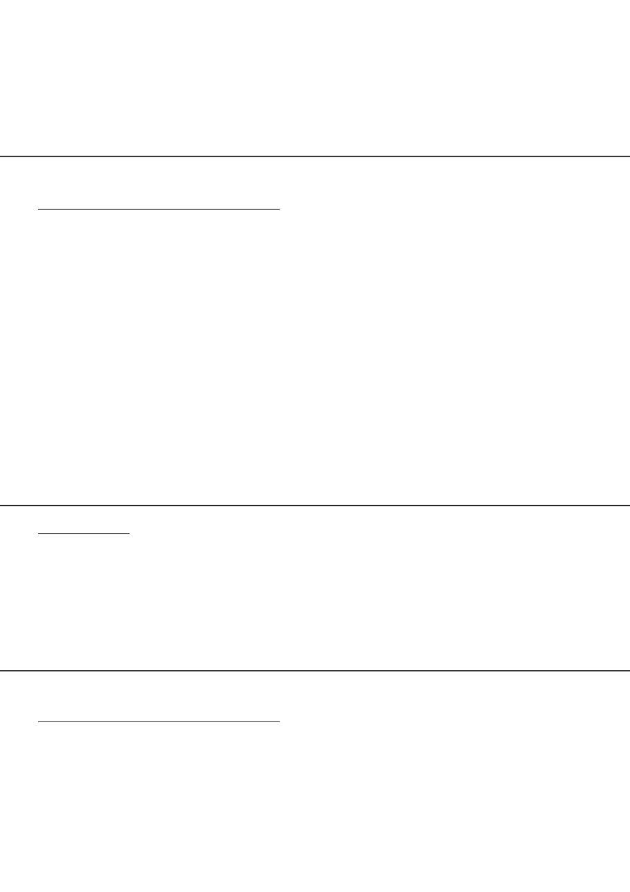

Eenheid 7 Seksuele gedrag en seksuele gesondheidStrategieë om ongesonde seksuele gedrag te hanteerGeen aktiwiteite Eenheid 8 Seksuele gedrag en seksuele gesondheidBeskermende faktore, waar om hulp en ondersteuning te vindAkt. 1: My seksuele regte
KWARTAAL 2 Onderwerp 3 (WEKE 1 – 5)Grondwetlike regte en verantwoordelikhedeEenheid 1 Kwessies wat verband hou met burgerregte en verantwoordelikhedeRespekteer ander se regteGeen aktiwiteite Eenheid 2 Kwessies wat verband hou met burgerregte en verantwoordelikhedeViering van nasionale en internasionale daeAkt. 1: Projek Eenheid 3 Grondwetlike waardes soos vervat in die SuidAfrikaanse grondwetPositiewe en negatiewe rolmodelleAkt. 1: Hoe rol jou model? Eenheid 4 Grondwetlike waardes soos vervat in die SuidAfrikaanse grondwetRolmodelle vir die handhawing van grondwetlike waardesAkt. 1: Nobelpryswenners in die RSAEenheid 5 Grondwetlike waardes soos vervat in die SuidAfrikaanse grondwetToepassing van grondwetlike waardes in die alledaagse leweAkt. 1: Hoe met jou gemaak?Akt. 2: Toets jou skoolOnderwerp 4 (WEKE 1 – 5)Wêreld van werkEenheid 4 Beskikbare opsies nadat Graad 9 voltooi isNasionale Senior Sertifikaat en Nasionale VaardigheidsertifikaatGeen aktiwiteite Eenheid 5 Kennis van die wêreld van werkVerantwoordelikhede en geleenthede in die werkplekAkt. 1: Wêreld van werk Akt. 2: Wêreld van werk
KWARTAAL 3 Onderwerp 4 (WEKE 1 – 5)Grondwetlike regte en verantwoordelikhedeEenheid 6 Loopbane en vakkeusesNSSvakke en loopbane wat met die vakke verband hou Geen aktiwiteite Eenheid 7 Loopbane en vakkeusesKwaliteite en besluitnemingsvaardighede wat verband hou met verskillende loopbane en vakke Geen aktiwiteite